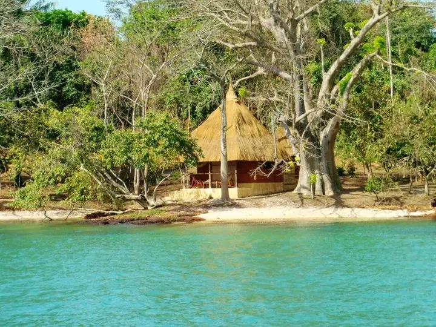
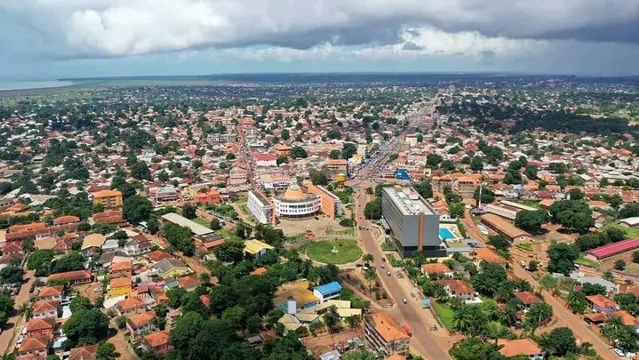
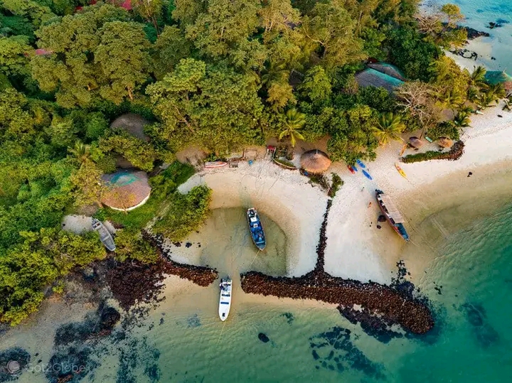
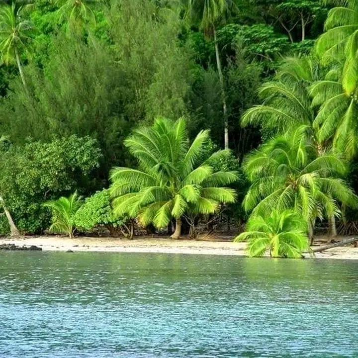

Principais Destinos Turísticos
Arquipélago dos Bijagós
O Arquipélago dos Bijagós é composto por mais de 80 ilhas e ilhéus. É um dos destinos mais procurados por turistas que desejam contato direto com a natureza. As praias são limpas, tranquilas e ideais para descanso, pesca e ecoturismo.




Bissau
Bissau é a capital do país e o centro administrativo e cultural. A cidade possui edifícios históricos, mercados tradicionais e bairros que mostram a mistura entre o passado colonial e a modernidade africana.


Cacheu
Cacheu é uma cidade histórica importante, conhecida pelo seu forte colonial e pelo seu papel na história do comércio atlântico. É um local ideal para quem gosta de história e cultura.


